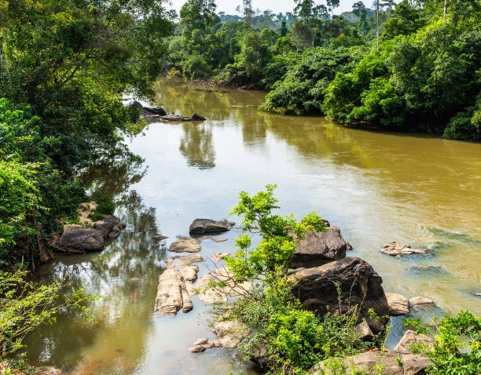

A place to call home
Ogun State

Data
- Country
- Nigeria
- Capital
- Abeokuta
- Region
- Southwest
- Language
- English, Yoruba
- Currency
- Nigerian naira
- Area
- 16,762 km2
Weather
Warm with passing clouds
- Temperature
- 28 °C
- Wind speed
- 12 km/h
- Wind chill
- N/A
Southwestern Nigeria
A place to call home

Warm with passing clouds